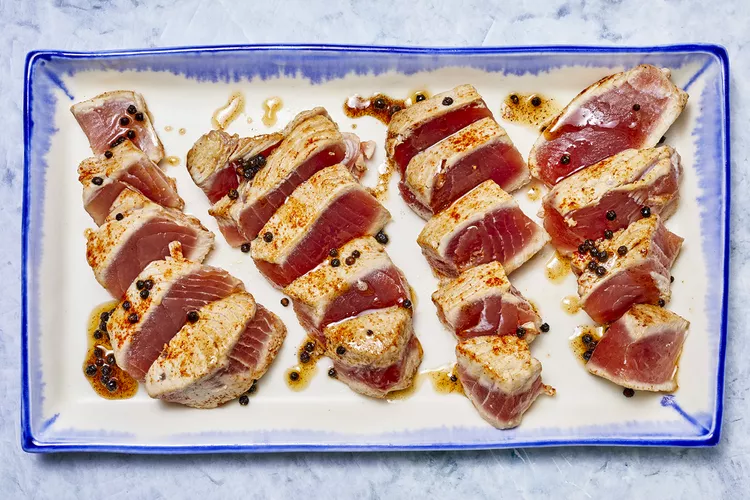

Seared Ahi Tuna Steaks

There's no need to head to a fancy seafood restaurant to get your ahi tuna steak fix. Instead,
try this top-rated ahi tuna steak recipe that comes together in just seven minutes — no, seriously, all you need is seven minutes.
Ingredients
- 2 (5 ounce) ahi tuna steaks
- 1 teaspoon kosher salt
- ¼ teaspoon cayenne pepper (Optional)
- ½ tablespoon butter
- 2 tablespoons olive oil
- 1 teaspoon whole peppercorns
Steps
- Season chicken breasts on both sides with salt and pepper. Place flour, beaten egg, and panko crumbs into separate shallow dishes. Coat chicken breasts in flour, shaking off any excess; dip into egg, and then press into panko crumbs until well coated on both sides.
- Heat oil in a large skillet over medium-high heat. Place chicken in the hot oil, and fry until golden brown, 3 or 4 minutes per side. Transfer to a paper towel-lined plate to drain.